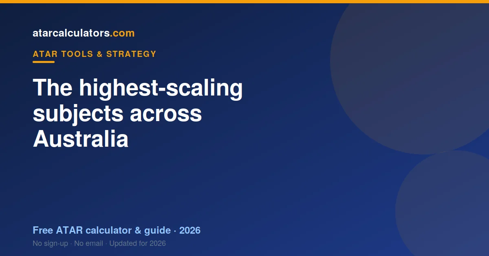

Across Australia, the highest-scaling subjects are typically the higher mathematics (Extension and Specialist), the sciences (Chemistry and Physics), and languages, especially small-cohort continuers courses, along with Latin and Economics. These scale up because their cohorts are strong across all subjects. Exact scaling is set by each state and shifts a little each year, so always check your own state’s latest figures.
Key takeaways
- The highest-scaling subjects are the higher maths, sciences and languages.
- Specialist and Extension maths scale the strongest.
- Chemistry and Physics scale strongly; Biology is moderate-to-high.
- Small-cohort languages and Latin scale very well.
- They scale up because their cohorts are strong, not because they are hard.
- Exact scaling is set by each state and shifts each year.
- A strong mark beats a weak one in a high-scaling subject.

The highest-scaling subjects
Year after year, and across states, the same broad group sits at the top of the scaling. It splits into three families: the higher mathematics, the sciences, and languages, with a couple of others close behind.
This consistency is useful. While exact figures differ by state and year, the families that scale well are stable. If you understand why they scale, you can make sense of any state’s list.
Higher mathematics
The advanced maths subjects scale the strongest of all. In NSW these are Mathematics Extension 2 and Extension 1; in Victoria, Specialist Mathematics; in other states, the equivalent highest maths course. Mathematical Methods, the next level, also scales well.
They scale strongly because they draw small, very capable cohorts. Students who take the highest maths tend to be strong across their whole program, which is exactly what lifts a subject’s scaling.
The most general maths course in each state scales lower, because it draws a much broader cohort. So the maths family spans the range, from the top-scaling advanced courses to the modest general one.
The sciences
Chemistry and Physics sit high on the scaling in every state. They attract students heading into science, engineering and medicine, who tend to be strong across their subjects.
Biology scales solidly, though usually a little below Chemistry and Physics, because it draws a broader cohort. It is still a strong choice, especially for health and science pathways.
So if you are capable in science, the sciences reward you twice: they scale well, and they are prerequisites for many competitive courses. As always, your mark within the subject decides how much you gain.
Languages and Latin
Languages, especially continuers and extension courses, scale very well. Latin is a standout, often near the very top. These subjects share a feature: small, select cohorts of strong students.
Beginners language courses scale less strongly than continuers, because their cohorts are broader. So the scaling benefit depends on the level, and on your genuine ability in the language.
For a capable language student, a continuers or extension language can be one of the best-scaling subjects available. But it is not a shortcut: you still need to rank near the top of that strong group.
Economics and others
Economics scales well in states where it draws a strong, academically-inclined cohort. A few other subjects, such as some advanced humanities and English Extension courses, scale above average for the same reason.
These sit just below the maths, science and language leaders, but well above the broad-entry subjects. They are worth considering if they suit your strengths and interests.
A reference table
Here is the consistent pattern, grouped by how strongly each family tends to scale. Treat this as indicative: exact order and figures are set by each state and shift each year.
| Scaling band | Typical subjects |
|---|---|
| Very high | Specialist / Extension 2 Mathematics, Extension 1 Mathematics, Latin, high-level continuers languages |
| High | Mathematical Methods, Chemistry, Physics, Economics |
| Moderate-to-high | Biology, English Extension, some advanced humanities |
| Moderate | General English courses, most humanities and social sciences |
| Lower | General/standard Mathematics, many practical and vocational courses |
Notice the top of the table is dominated by higher maths, sciences and small-cohort subjects. That is the fingerprint of strong cohorts, which is what scaling rewards.
Why these subjects scale up
The common thread is cohort strength. Every subject near the top of the scaling attracts students who perform well across all their subjects. That strength is what lifts the scaling.
It is not the difficulty of the content itself. Difficulty matters only indirectly, because harder subjects tend to attract capable, motivated students. Strip away the cohort, and difficulty alone would not move the scaling. See how scaling works.
What scales down
Broad-entry subjects tend to scale lower, along with many practical and vocational courses. This is not a judgement on their value or difficulty; it reflects the wide range of students who take them.
Importantly, a lower-scaling subject can still produce a strong scaled mark if you rank near the top of it. Scaling lowers the whole subject, but your position within it still counts fully.
The caveat that matters most
Every list of “highest-scaling subjects” comes with a caveat: scaling is set by each state and recalculated each year. So a subject that scales well in one state may sit slightly differently in another, and figures move from year to year.
This means you should treat any national list, including this one, as a broad guide. For your actual decisions, use the latest official scaling information for your own state.
Do these subjects guarantee a high ATAR?
No. Choosing a high-scaling subject does not guarantee a high ATAR, because scaling only rewards your rank within the subject. A high-scaling subject you score poorly in gains you nothing.
The students who benefit from high-scaling subjects are the ones who rank well in them. So the subject is not a shortcut; it is a reward for strong performance in a strong cohort.
Choosing well
Start from your strengths, then check scaling. Often, some of the subjects you are strong in already scale reasonably. Add a high-scaling subject only if you can genuinely do well in it.
And never let scaling override a prerequisite. If a course you want requires a specific subject, take it, whatever its scaling. Prerequisites open doors that scaling cannot.
Check your own state’s figures
See the real numbers for your state and subjects. Our ATAR scaling calculator uses official data to show how each subject scales, from your mark to your scaled mark.
For a deeper look by state, see the best-scaling-subjects guides, such as best scaling subjects in NSW. Real, state-specific figures beat any national rumour.
How much do the top subjects scale?
The strongest scalers can lift a top raw mark by several points once scaled, while the effect is smaller in the middle of the mark range. So the benefit is greatest for students who rank near the top of a high-scaling subject.
For a middling mark, the scaling lift is more modest. This is worth remembering: the headline scaling of a subject describes what happens across the whole cohort, and you only capture the top of that benefit by ranking near the top.
So a high-scaling subject is not a flat bonus. It is a reward that grows with your rank, which is why performance still matters more than the subject’s reputation.
The sciences in more detail
Within the sciences, Chemistry and Physics consistently scale higher than Biology, because they tend to draw a slightly stronger and more specialised cohort. Biology, being more broadly taken, scales solidly but usually a touch lower.
All three are valuable, both for scaling and as prerequisites for health, science and engineering courses. So the choice between them should rest on your ability and your intended pathway, not on chasing the last point of scaling.
A strong mark in Biology can easily beat a weaker mark in Chemistry. As always, your rank within the subject decides how much its scaling helps you.
The role of enrolment size
Enrolment size is a quiet but powerful driver of scaling. Small subjects, like Latin and continuers languages, often scale very highly because they attract small, select groups of strong students.
Large, broadly-taken subjects scale more modestly, because their cohorts span a wide range of abilities. This is not a penalty; it simply reflects who takes them. A broad subject with a wide cohort produces moderate scaling.
So when you see a small subject near the top of a scaling list, its size is part of the story. That does not make it a shortcut, since you still need to rank near the top of that strong group.
Choosing from the top scalers
If several of the top-scaling subjects suit you, you are in a strong position. Choose the ones you can perform best in, and you get both good marks and good scaling.
But do not force yourself into a top scaler that does not suit you. A high-scaling subject you rank poorly in gains you little, and it may drag down your other subjects by consuming your time. Balance is part of a strong program.
A realistic expectation
Set your expectations sensibly. Taking high-scaling subjects can help at the margin, but it will not transform a middling set of marks into a top ATAR on its own. Scaling adjusts; it does not manufacture.
The students with the highest ATARs are those who rank well across strong subjects. The scaling follows from their performance, not the other way around. So aim to perform, and let scaling reward it.
A note on state differences
Because each state scales independently, the exact order of top subjects differs a little between states, even though the families are the same. A subject near the top in one state may sit slightly differently in another.
So use this national picture to understand the pattern, then check your own state’s figures for your actual decisions. The families that scale well are shared; the precise order is local.
Common questions
What are the highest-scaling subjects in Australia?
The highest-scaling subjects are typically the higher mathematics (Specialist and Extension), the sciences (Chemistry and Physics), and languages, especially small-cohort continuers courses, along with Latin and Economics. They scale up because their cohorts are strong.
Do sciences and higher maths scale best?
They are among the best. Higher maths (Specialist and Extension) scales the strongest, with Chemistry and Physics close behind. This is because they attract students who are strong across all their subjects.
Do languages scale up?
Yes, especially continuers and extension languages, and Latin. Their small, select cohorts of strong students give them very high scaling. Beginners courses scale less strongly, because their cohorts are broader.
Does choosing high-scaling subjects guarantee a high ATAR?
No. Scaling only rewards your rank within a subject, so a high-scaling subject you score poorly in gains you nothing. The students who benefit are those who rank well in them.